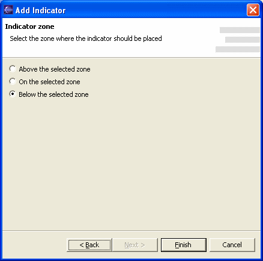

The historical and intraday chart windows are capable to draw, in addition to the price and volume chart, a number of technical analisys indicators. Right-click on the chart and select the Add item to start the Add Indicator wizard, or click on the Modify item to change the parameters of the currently selected indicator.
Each indicator has a specific set of parameters. By selecting an indicator and clicking on the next button it is possible to customize the indicator parameters as is needed.

Clicking on the next button it is possible to select where the new indicator will be placed. Available options are: above the selected zone, on the selected zone and below the selected zone (default). The selected zone is the chart portion that is hilighted with a red vertical bar.

To learn more about technical indicators and how to use them, visit the following sites:
BigCharts Glossary: